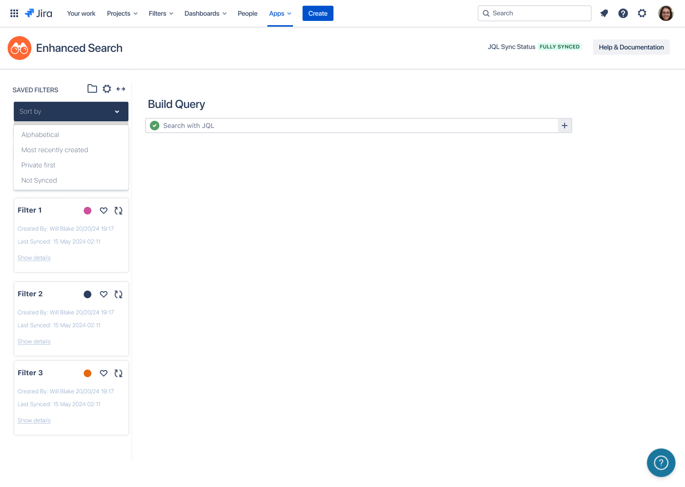
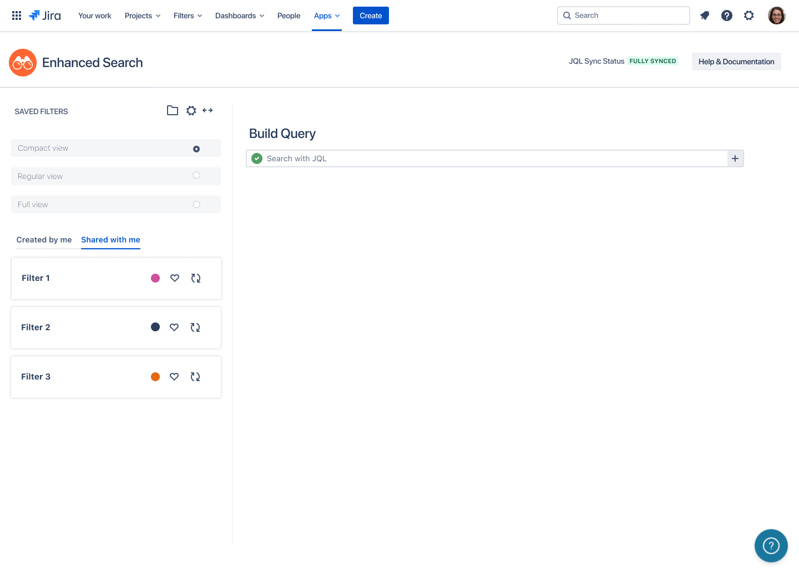
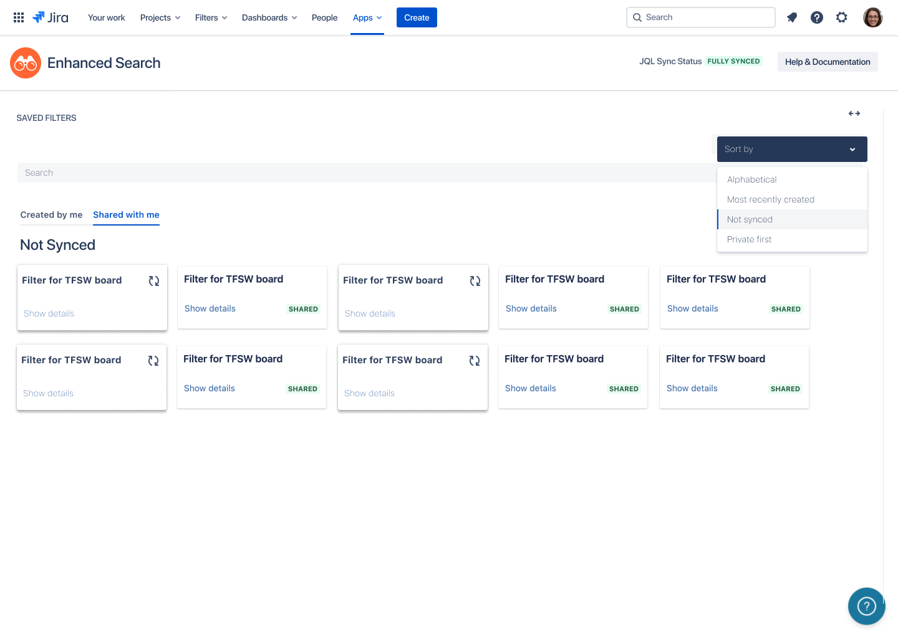
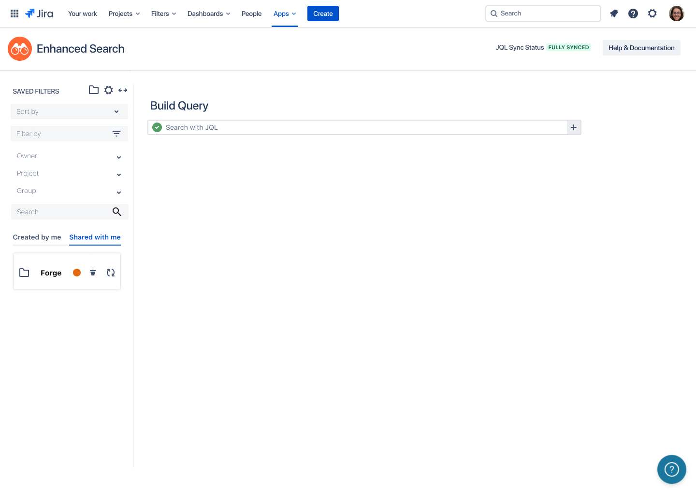
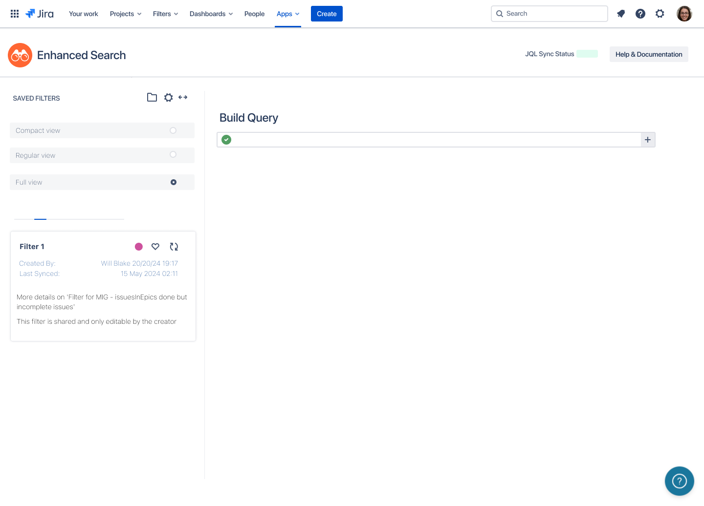
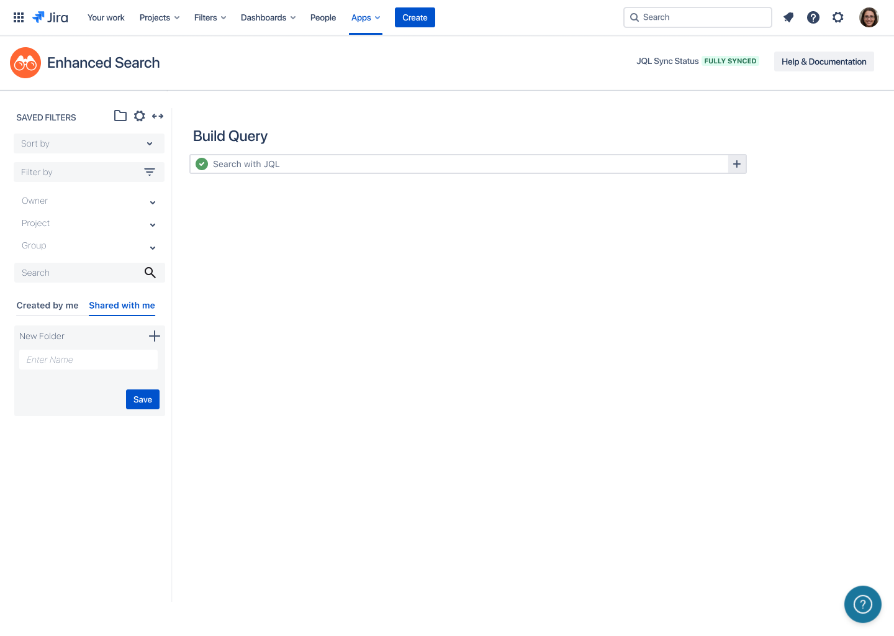

Enhanced Search
Saved filter management for Jira organisations running on hundreds of shared JQL queries, rebuilt around ownership, sync state, and the working modes admins actually use.
The information architecture, the ownership and sync model, the density system, and the folder structure are my own design decisions. Screens shown are captured from the working interface. This write up was assembled with AI assisted tooling from my design source.

A personal shortcut that became shared infrastructure
A saved JQL filter starts life as a convenience for one person. At organisational scale it turns into infrastructure that nobody owns. Boards depend on it. Reports depend on it. Teams inherit filters from people who have left, and a filter edited upstream quietly changes what a downstream board shows.
The list that held all of this was flat and undifferentiated. A filter synced this morning and a filter abandoned two years ago looked identical. Provenance, permission, and sync state existed in the data but not in the interface, so every question about a filter meant opening it, and every audit meant opening all of them.
Ownership as the organising idea
I treated this as a service problem rather than a list problem. The question the interface has to answer is not what filters exist, but who is accountable for this one and whether the person looking at it can act.
Who owns this, when did it last work, and am I allowed to fix it?
Every card answers that on its face. Created by and last synced sit on the card itself. The permission position, that a filter is shared and only editable by its creator, is stated in words rather than implied by a disabled control, so an admin triaging a broken board knows immediately whether to fix it or to go and find the owner. That single change removes the most common dead end in the old flow, which was discovering a lack of permission only after attempting an edit.

Sync state gets its own view
Sync failure used to be an individual discovery. Someone notices a board is wrong, investigates, and eventually finds a filter that never synced. Each instance costs an investigation, and the set of stale filters is never visible as a set.
I promoted Not Synced to a sort mode and a view in its own right, so the entire stale population surfaces as one triage queue that can be worked through in a session. A per filter sync control sits on each card for the individual case, and a global JQL Sync Status indicator in the header carries the same information at system level. That header state answers the question that otherwise starts every support thread, which is whether the problem is this filter or the whole integration.

One list, three working modes
Admins use this surface in three different ways. A fast retrieval of something they already know the name of. A working review of a handful of filters. A full audit where every attribute matters. The instinct is to build three screens. I built one list with three densities, because the alternative fragments a single mental model across separate places.
Name, colour marker, favourite, and sync control. Built for scanning a long list to find one known item.
Adds creator and last sync timestamp. The default, because most sessions are maintenance rather than search.
Expands description and permission statement inline. Built for audit, handover, and cleanup.
The sort controls follow the same logic. Alphabetical serves known item retrieval. Most recently created serves recent work. Private first serves personal triage. Not synced serves maintenance. Each option maps to a task rather than to a field, which is what keeps a four item menu from becoming a fourteen item one.


Structure that survives scale
Past a certain count, a flat inventory stops being navigable no matter how well each row is designed. Folders let teams group filters the way they already group work, and the creation flow is deliberately shallow: name it, save it, move on, rather than a configuration dialogue that discourages anyone from organising anything.
On top of that shared structure sit two lightweight personal layers. Colour markers give visual retrieval without imposing taxonomy on anyone else, and favourites give each admin a private working set inside a shared inventory. The distinction matters. Shared structure is governance, personal marking is convenience, and conflating the two is how filter lists become unmaintainable in the first place.

What changed
The result is a saved filter surface that can be maintained rather than only used. Ownership is visible without opening anything. Stale filters are triageable as a group instead of one discovery at a time. Structure holds at the point where a team has more filters than any one person can remember, and the same card model carries from the narrow sidebar to the full width grid.
The underlying move is small and repeatable. Take the facts a system already holds about provenance and state, and put them where the decision is made rather than one click away from it.
A shared asset with no visible owner is not a feature. It is an audit finding waiting to happen.